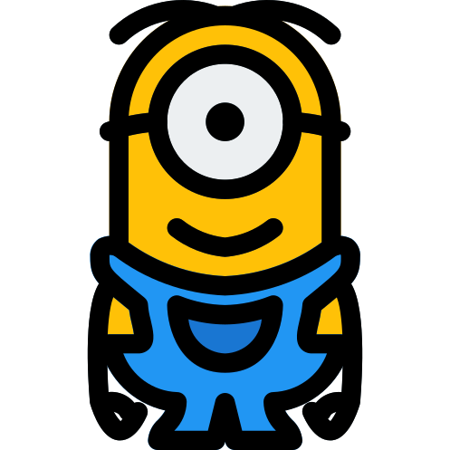

Minionese, or often referred as Minion Language or Banana Language, is a polyglot language, which borrows words and grammatical rules from many different languages (French, English, Spanish, Hindi, Korean etc.). Minionese contains some elements of English, with words like "Banana". Minions are, as has been shown many times, particularly obsessed with food.
